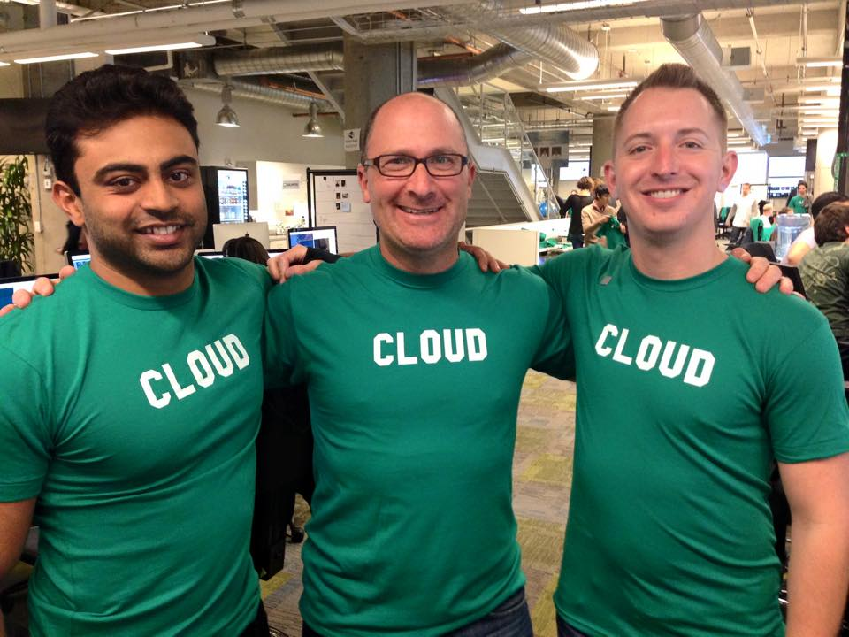

agilemarkdown
The Pivotal Tracker workflow as plain markdown in git. Drive it from a shell, VS Code, or your AI client.
What it is
Three pieces fit together: a markdown backlog in git, three ways to drive it, and a Pivotal-style coach for what Kent Beck now calls augmented coding.
The backlog lives next to the code. Stories are markdown files: a small header for metadata, then the body. Priority is a ranked list; the icebox is a capture pile, not ranked. Because the story files sit alongside your code files, the same commit that ships a feature can update the story that asked for it.
Three ways to drive the same files. The shell CLI is the foundation and a prerequisite for the other two. am creates stories, ranks them, estimates them, and moves them from started to delivered to accepted. A VS Code extension lays a board on top: current and icebox columns, drag-to-reorder, a detail panel. An MCP server, am mcp, exposes around fifty tools to Claude Desktop, Claude Code, Cursor, and any other AI client that speaks MCP.
Terminal capture of am align Login-flow.md: title, type, estimate, acceptance bullets with their [ ] / [~] / [x] state markers, and a warnings list if anything is missing.
The extension's story detail panel for Login flow: the acceptance bullets, the points pip, and an alignment button that runs the same check before pulling.
A Claude Code session showing the agent restate the story in one paragraph, list the acceptance bullets verbatim, surface one ambiguity, and ask the PM to confirm before calling coach_check(action="pull") and set_status(started).
A Pivotal-style coach for AI clients. Six Claude Code skills walk you through the project lifecycle, from inception to retro. A handful of hard rules block the mistakes an AI agent tends to make when it is writing code on the team's behalf. The Pivotal Way below describes the practices behind them.
The Pivotal Way
How Pivotal Tracker teams worked, day to day. The workflow comes from Extreme Programming, and the parts this tool keeps are the parts most of the industry left behind when it chose Scrum.
I worked at Pivotal Software, not Pivotal Labs, and I count myself a latecomer to the Pivotal way. I had picked up most of these practices earlier at Engine Yard, the hosting provider for Pivotal's sites and for a lot of the SF Ruby community (GitHub, New Relic, Zendesk), where the same XP playbook was already in the air. If you were on the earlier Pivotal Labs team and I have something wrong here, please send me a note.

Everything goes in the backlog. Before anyone starts a piece of work, the team writes it down as a story. That means features, but it also means bugs, chores, the customer escalation that lands on a Tuesday morning, and the half-hour someone spends unblocking another team. When you work on things that are not in the backlog, you cannot tell how much the team got done in any given week. Keeping the work visible also gives the product manager something concrete to talk about. If you see a story on the priority list that you do not recognize, you can ask about it without making a scene, because the work is right there in front of both of you.
There is only one backlog. Different tools use the word "backlog" to mean different things. At Pivotal it was one list of stories, ranked top to bottom. The top portion was the current sprint, highlighted in Tracker with a creamy yellow so you could see at a glance what the team was doing this week. Below that, the rest of the list ran in a neutral color, ranked but not yet promised to a sprint. Sprints were a week, not two. And a sprint was not a contract for a fixed set of stories; Scrum often treats it that way, and to me that has always been a polite lie, because unplanned work arrives every week and the team finishes what it finishes. The honest framing is that the top of the list is what we expect to get through, not what we have promised. As people free up during the week, they pull the next story off the top.
Terminal capture of am show priority: stories ranked top to bottom, current iteration banded by velocity, below-line backlog beneath, icebox count at the bottom.
The board view showing the one-list shape. Top of the column is the current iteration, highlighted in creamy yellow with three story cards (two accepted at [x], one in flight at [~]). Below an iteration-marker line: the rest of the priority list in a neutral color, ranked but not yet promised. Right-side icebox column. Sidebar with velocity sparkline.
A Claude Code conversation where the agent renders the priority list inline as part of answering "what is on this iteration?".
Velocity is a forecast, not a promise. Each story carries an estimate in points (a rough sizing the team agrees on). Tracker used those numbers to place markers throughout the backlog, showing when each story was likely to land: this week, the next week, or later. The math adjusted for team strength, accounting for who was sick or on vacation. Predictions only worked for stories the team had already estimated, which usually happened in a planning meeting on Monday morning. There is never quite enough time in that meeting to estimate everything, and new stories arrive mid-week, so the deeper into the backlog you looked, the looser the markers got. That blurriness further out is just what software actually feels like. It shaped how we answered sales when they asked "when will this land": with confidence when the date was close and the team's velocity had been steady, and with honest uncertainty when the date was further out.
"Velocity is the average normalized points completed across the last N iterations, where N is the project's Velocity Strategy setting (default 3, range 1-4). Velocity is computed once per iteration boundary and shown as an integer (it is floored on display and never rounded up)."
Pivotal Tracker help center · understanding velocity
Inception
A project starts with an inception, Pivotal's word for a kickoff. The team gets in a room with the stakeholders who understand the problem (design, sales, customer service, leadership, whoever is closest), and together they answer three questions: what problem are we solving, why are we solving it, and what are the possible shapes of a solution. Then they agree on a plan.
The output is concrete: a week or two of ranked stories, enough to start work. Engineers add the chores they know will be needed. After that, the team gets to work week by week. One inception per major initiative is enough.
Three types of work
Stories are features. A story is a unit of customer value, typically a feature. The classic format is "as a [user] doing [thing], I should be able to [action] so I can [outcome]". In practice, when the team already knows who the user is and what the context is, "I should be able to [action]" is usually enough. Every story is a placeholder for a conversation, so if a story is not fully written down, that is fine as long as someone in the room can explain it. The product manager owns the priority of features, and also their acceptance: when a developer says a feature is done, the product manager is the one who checks it against the criteria and decides whether to ship. The dev pair never accepts its own work.
"When they're ready, a developer or developer pair clicks Start on the next unstarted, estimated story in the current iteration. Unless preassigned, the person who clicked Start becomes a story owner."
Pivotal Tracker help center · story states
Bugs go to the top. When the team finds a bug, it goes to the top of the list and gets fixed right away. Bugs carry no estimate, which means a buggy stretch shows up automatically as a drop in velocity, and the release dates move further out. That is the feedback loop: cutting corners on quality is visible in the forecast a week or two later, so the product manager has a real reason not to push for speed over correctness.
Chores are work the team owes itself: setting up CI, writing tests, fixing a doc page after a customer complains, doing research the team needs. Chores carry no estimate, because they do not ship to a customer. The backlog is heavy on chores at the start of a project; later, chores often appear just in time, like a doc fix triggered by a support call that goes straight to the top of the list. Engineering owns the priority of bugs and chores.
None of this is strict. Everyone assumes everyone else is reasonable and collaborative. The product manager can argue that a "critical" bug is actually a nice-to-fix and not urgent, and move it down the list. An engineer can argue that a feature depends on something else that is not built yet, and ask the product manager to put something else above it. The work is on the priority list, so everyone discusses it together while looking at the same list.
The icebox
There is a Woody Guthrie song with the chorus "this land is your land, this land is my land". The backlog is the PM's land, top to bottom, ranked by priority. The icebox is everyone else's. Engineers throw in features they think would be cool. Solutions engineers add things they heard in customer calls. The PM drops in ideas that are not ready to prioritize. The icebox is not ranked, and nothing in it is being worked on. It is a capture pile.
The icebox becomes useful at planning time. During Monday sprint planning, or in grooming on Friday, items get pulled out, talked through, estimated if they are nearly ready, and moved into the backlog at whatever rank the product manager decides. The chaos of the icebox is intentional: a calm, prioritized backlog and a permanent welcome mat for new ideas need to live in separate lists.
The weekly cadence
Monday sprint planning. If the backlog is well-prepped and the week's stories are clear, you skip the meeting and get to work. When you do meet, you walk the top of the backlog so everyone knows what the week looks like and can ask the PM and the eng lead anything that is not clear. Stories the PM cannot answer clearly tend to slide down or out of the week; the goal is to leave the meeting ready to work, not stuck. Anything still unestimated gets estimated in the meeting, often by a game called pointing poker: count of one, two, three, fingers up. If most of the team puts ten fingers up, the story is too big and needs a spike (a short, time-boxed research chore) to figure out how to break it down for the following week. The icebox is fair game in this meeting; any item the PM decided over the weekend was urgent gets pulled up into the week.
Terminal capture of am sprint plan running against the fixture. Header with rolling velocity. Numbered committed stories with type, points, acceptance-bullet count, and status. Horizontal rule. Below-the-line backlog with the same shape. Warnings flagging anything missing acceptance, oversized, or unestimated.
The Plan tab showing the same forecast as a table: committed stories at the top, below-line backlog beneath, warnings panel to the right, committed-points total in the footer.
A Claude Code session running /am-plan. The agent calls sprint_plan, renders the result, flags warnings, and asks whether to pull the top story.
The standup is a quick go-round, not a performance. Instead of "here is what I am working on", each person offers either an interesting (something they learned yesterday, something another team is doing, a video they saw) or a help (I am stuck on X, who can pair). Helps often resolve right there in the standup; if not, the team creates a chore for the work. The product manager can pass. Sometimes the whole standup is five seconds, and nothing to report is a good thing. A pair board tracks who is working with whom; a fire helmet on a desk means that person is on incident duty and is not pairing today.
"A story can have up to three owners at any given time. For example, a story might be owned by a developer pair plus a tester, or by a developer pair and a designer. The pull rule is the default. Pre-assignment is the exception."
Pivotal Tracker help center · story owners
Grooming, or story time. The product manager and the engineering lead usually meet on Friday afternoon to prep for Monday, so the Monday morning planning meeting is not a mess of half-written stories. Sometimes the whole team joins. Often this is when icebox items get estimated, because you cannot rank items you have not sized; a few quick wins can be worth more than the one boulder above them.
Friday retro. The team gathers, optionally with snacks or drinks, and takes a breath. The first five minutes go to electing a facilitator; the goal is to rotate the role weekly. Three columns go on the whiteboard: good, meh, not so good. The names are not important; every team renames them. People write topics; if there are too many, the team dot-votes on which to discuss. For each topic the facilitator asks the author for context, then the team talks it through. The ground rules are simple: stay civil, avoid blame, and never make it personal. Action items get assigned and photographed at the end, and the next retro starts by checking in on them.
Terminal capture of am retro at the end of an iteration. Header block with the iteration's numbers: velocity, volatility, median cycle time, rejection rate, accepted total, rejected total. Below that, the three retro questions (what worked, what did not, what changes for next iteration) and the helper commands for capturing the answers (am record-learning, am team-agreements --add).
An integrated terminal pane in the extension running am retro, with the numbers and the three questions visible. (No standalone retro tab today; the extension hands off to the terminal.)
A Claude Code session running /am-retro: the agent pulls the dashboard numbers, asks the three questions one at a time, records the human's answers into learnings.md and team-agreements.md.
Why now
agilemarkdown's first commit was in 2018, years before today's AI coding agents existed. The Pivotal way was already worth running then. AI coding agents made it cheap, and made it necessary.
The economics flipped, and a twenty-year bet aged badly. The XP practices the Pivotal way runs on (pair programming, refactor-as-you-go, small batches, test-first work) were treated as too expensive when the industry chose its default in the early 2000s. Scrum won the decade because it had a better wrapper, not because it was better software, and Ron Jeffries (an XP author) calls the result Dark Scrum: the process without the engineering discipline that made it agile in the first place. AI agents inverted the math. Pair programming is what you get for free when an agent sits in your editor, and refactoring is nearly costless when the agent does the typing. Kent Beck, the author of XP, calls the new mode augmented coding; Martin Fowler argues refactoring matters more than ever now that producing code is cheap; Jason Gorman names the moment an XP renaissance. Further reading tracks the conversation.
Acceptance is the seam that matters most. "The dev pair never accepts its own work" was a check on humans missing details. With an AI in the dev-pair seat, it is a check on the main mistake AI agents make: confidently building the wrong thing. Acceptance criteria written into the story before the agent pulls it give the agent a target. The product manager checks those criteria before flipping the story to accepted, which is what stops the team from shipping fast but wrong.
Terminal capture of am accept-prompt Login-flow.md. Story title, type, estimate. Acceptance bullets with their state markers. The final "As PM, do you accept?" line, with the shell waiting for input.
The extension's inline PM acceptance ceremony. Story title, type, estimate. Acceptance bullets with state markers: two [~] claimed (each with a tiny claim note from the agent), one [ ] still open. Per-bullet yes/no toggles next to the claimed bullets. The Accept button is disabled until every bullet is verified. The reject form shows a "which bullet failed?" picker.
A Claude Code session walking the acceptance ceremony. The agent calls acceptance_prompt, renders the bullets verbatim, asks the PM bullet-by-bullet, calls set_acceptance_state on each yes, and would call reject_item with a failing-bullet index on a no.
Small, scoped, estimated work is what agents handle best. Stories that fit in the 8-point cap and carry a written ## Acceptance section also fit in what an AI agent can hold in mind at once. The Pivotal shape was always biased toward stories one pair could finish in a few days. That shape now happens to be the shape an agent can coherently deliver in a single run.
Resilience is the part you have to defend. Weber's warning is the real one: shipping at AI speed without humans who understand the architecture creates teams that cannot respond when something breaks. The Pivotal practices that protect resilience (shared ownership through review, retros, time set aside for learning) are what keep the team's understanding ahead of the agent's output. Without them, the speed you gain now costs you the next time something goes wrong.
Where to go from here
Try the tutorial
The tutorial runs a two-iteration scenario end to end: inception, planning, pulling stories, the 8-point cap kicking in, acceptance, retro. Each scene carries a triptych so you can switch any screenshot to shell, VS Code, or Claude Code; the choice carries through the page. About twenty minutes.
Look up the details
The reference covers the repo layout, item schema, state machine, velocity formula, MCP tools, CLI verbs, coach-mode files, and configuration. Use it when you know what you want but forgot the exact field or flag.
Read more
Further reading is the list of essays driving the XP renaissance conversation in the AI era: Kent Beck on augmented coding, Martin Fowler on refactoring, the XP 2025 conference, and the practitioners who are calling the trend by name.
Source code
Code, issues, and releases at github.com/mreider/agilemarkdown.